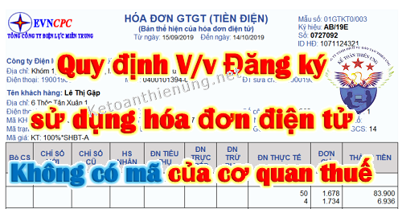

Quy định về việc Đăng ký sử dụng hóa đơn điện tử không có mã của cơ quan thuế: Điều kiện, đối tượng sử dụng hóa đơn điện tử không có mã của cơ quan thuế.
I. Quy định về hóa đơn điện tử không có mã của cơ quan thuế:
- Ký hiệu hóa đơn: Ký tự đầu tiên là K thể hiện hóa đơn điện tử không có mã của cơ quan thuế.
- Ví dụ thể hiện các ký tự của ký hiệu mẫu hóa đơn và ký hiệu hóa đơn:
+ “1K22TYY” – là hóa đơn GTGT loại không có mã của cơ quan thuế được lập năm 2022 và là hóa đơn điện tử do doanh nghiệp, tổ chức đăng ký sử dụng với cơ quan thuế.
+ “1K22DAA” – là hóa đơn GTGT loại không có mã của cơ quan thuế được lập năm 2022 và là hóa đơn điện tử đặc thù không nhất thiết phải có một số tiêu thức bắt buộc do các doanh nghiệp, tổ chức đăng ký sử dụng.
+ “3K22TAB” – là phiếu xuất kho kiêm vận chuyển điện tử loại không có mã của cơ quan thuế được lập năm 2022 và là chứng từ điện tử có nội dung của hóa đơn điện tử do doanh nghiệp đăng ký với cơ quan thuế.
---------------------------------------------------------------------
Căn cứ điều 6 Thông tư 68/2019/TT-BTC và điều 12 Nghị định 119/2018/NĐ-CP
- Doanh nghiệp kinh doanh ở các lĩnh vực: điện lực; xăng dầu; bưu chính viễn thông; vận tải hàng không, đường bộ, đường sắt, đường biển, đường thủy; nước sạch; tài chính tín dụng; bảo hiểm; y tế; kinh doanh thương mại điện tử; kinh doanh siêu thị; thương mại và các doanh nghiệp, tổ chức kinh tế đã hoặc sẽ thực hiện giao dịch với cơ quan thuế bằng phương tiện điện tử, xây dựng hạ tầng công nghệ thông tin, có hệ thống phần mềm kế toán, phần mềm lập hóa đơn điện tử đáp ứng lập, tra cứu hóa đơn điện tử, lưu trữ dữ liệu hóa đơn điện tử theo quy định và đảm bảo việc truyền dữ liệu hóa đơn điện tử đến người mua và đến cơ quan thuế thì được sử dụng hóa đơn điện tử không có mã của cơ quan thuế (trừ trường hợp nêu tại khoản 3 Điều này và trường hợp đăng ký sử dụng hóa đơn điện tử có mã của cơ quan thuế).
Yêu cầu: Các lĩnh vực điện lực; xăng dầu; bưu chính viễn thông; vận tải hàng không, đường bộ, đường sắt, đường biển, đường thủy; nước sạch; tài chính tín dụng; bảo hiểm; y tế; kinh doanh thương mại điện tử; kinh doanh siêu thị; thương mại được xác định theo ngành kinh tế cấp 4 theo Danh mục hệ thống ngành kinh tế quốc dân ban hành kèm theo Quyết định số 27/2018/QĐ-TTg ngày 7/6/2018 của Thủ tướng Chính phủ.
-> Trong đó đối với hoạt động kinh doanh thương mại điện tử được xác định theo mã ngành bán lẻ theo yêu cầu đặt hàng qua internet; kinh doanh siêu thị được xác định theo mã ngành bán lẻ trong siêu thị, trong cửa hàng tiện lợi; kinh doanh thương mại được xác định theo các mã ngành bán buôn, bán lẻ các mặt hàng.
------------------------------------------------------------------------------
Căn cứ theo điều 20 Nghị định 119/2018/NĐ-CP và điều 13 Thông tư 68/2019/TT-BTC:
1. Doanh nghiệp, tổ chức kinh tế thuộc trường hợp sử dụng hóa đơn điện tử không có mã của cơ quan thuế truy cập vào Cổng thông tin điện tử của Tổng cục Thuế để đăng ký sử dụng hóa đơn điện tử không có mã của cơ quan thuế.
- Các tỉnh/thành phố: Hà Nội, Tuyên Quang, Hà Nam, Hải Phòng, Nam Định, Ninh Bình, Thái Bình, Vĩnh Phúc, Quảng Ninh, Sơn La, Thanh Hoá, Nghệ An, Hà Tĩnh, Quảng Bình, Đồng Nai truy cập vào http://thuedientu.gdt.gov.vn.
- Các tỉnh/thành phố còn lại truy cập vào http://nhantokhai.gdt.gov.vn
-> Chi tiết các bạn có thể xem cụ thể trên 2 website trên nhé.
Hồ sơ đăng ký sử dụng hóa đơn điện tử không có mã của cơ quan thuế:
- Nội dung thông tin đăng ký, thay đổi thông tin đã đăng ký theo Mẫu số 01 Phụ lục ban hành kèm theo Nghị định 119.
|
CỘNG HÒA XÃ HỘI CHỦ NGHĨA VIỆT NAM
Tên người nộp thuế: Công ty tư vấn Minh PhúcĐộc lập - Tự do - Hạnh phúc --------------- TỜ KHAI Đăng ký/thay đổi thông tin sử dụng hóa đơn điện tử Mã số thuế: 0112456835 Người liên hệ: Lê Minh Khang Địa chỉ liên hệ: Số 35 Trần Điền, phường Định Công, Hà Nội Địa chỉ thư điện tử: ketoandieutam@gmail.com Điện thoại liên hệ: 0912468357 Theo Nghị định số 119/2018/NĐ-CP ngày 12 tháng 09 năm 2018 của Chính phủ, chúng tôi/tôi thuộc đối tượng sử dụng hóa đơn điện tử. Chúng tôi/tôi đăng ký/thay đổi thông tin đã đăng ký với cơ quan thuế về việc sử dụng hóa đơn điện tử như sau: - Áp dụng hóa đơn điện tử: □ Có mã của cơ quan thuế □ Không có mã của cơ quan thuế - Đăng ký giao dịch qua: □ Cổng thông tin điện tử của Tổng cục Thuế (theo khoản...Điều ...Nghị định) □ Tổ chức cung cấp dịch vụ về hóa đơn điện tử - Loại hóa đơn sử dụng: □ Hóa đơn GTGT □ Hóa đơn bán hàng □ Hóa đơn khởi tạo từ máy tính tiền □ Các loại hóa đơn khác - Danh sách chứng thư số sử dụng:
Chúng tôi cam kết hoàn toàn chịu trách nhiệm trước pháp luật về tính chính xác, trung thực của nội dung nêu trên và thực hiện theo đúng quy định của pháp luật./.
|
|||||||||||||||||||||||||||||
Tải mẫu 01 Nghị định 119 về tại đây:
- Trường hợp cơ quan thuế không chấp nhận đăng ký sử dụng hóa đơn điện tử không có mã thì doanh nghiệp, tổ chức kinh tế đăng ký sử dụng hóa đơn điện tử có mã của cơ quan thuế.
Xem thêm: Cách đăng ký sử dụng hóa đơn điện tử có mã.
- Kể từ thời điểm sử dụng hóa đơn điện tử không có mã của cơ quan thuế, doanh nghiệp, tổ chức kinh tế phải thực hiện hủy những hóa đơn giấy còn tồn chưa sử dụng (nếu có).
- Cơ quan thuế tiến hành rà soát doanh nghiệp, tổ chức kinh tế sử dụng hóa đơn điện tử không có mã của cơ quan thuế và thông báo theo Mẫu số 07 Phụ lục ban hành kèm theo Nghị định 119 nếu thuộc đối tượng chuyển sang sử dụng hóa đơn điện tử có mã của cơ quan thuế.
-------------------------------------------------------------------------------
IV. Trách nhiệm của DN sử dụng hóa đơn điện tử không có mã của cơ quan thuế:
Căn cứ theo điều 23 Nghị định 119/2018/NĐ-CP và Điều 16 Thông tư 68/2019/TT-BTC quy định:
1. Tạo lập hóa đơn điện tử về bán hàng hóa, cung cấp dịch vụ để gửi đến người mua và chịu trách nhiệm trước pháp luật về tính hợp pháp, chính xác của hóa đơn điện tử.
2. Chuyển dữ liệu hóa đơn điện tử đã lập đến cơ quan thuế qua Cổng thông tin điện tử của Tổng cục Thuế (chuyển trực tiếp hoặc gửi qua tổ chức cung cấp dịch vụ hóa đơn điện tử).
3. Lưu trữ và bảo đảm tính toàn vẹn của toàn bộ hóa đơn điện tử; thực hiện các quy định pháp luật về bảo đảm an toàn, an ninh hệ thống dữ liệu điện tử.
4. Chấp hành sự thanh tra, kiểm tra, đối chiếu của các cơ quan có thẩm quyền theo quy định của pháp luật.
5. Quy định về việc chuyển và tiếp nhận dữ liệu hóa đơn điện tử không có mã của cơ quan thuế như sau:
Căn cứ theo điều 23 Nghị định 119/2018/NĐ-CP và Điều 16 Thông tư 68/2019/TT-BTC quy định:
1. Tạo lập hóa đơn điện tử về bán hàng hóa, cung cấp dịch vụ để gửi đến người mua và chịu trách nhiệm trước pháp luật về tính hợp pháp, chính xác của hóa đơn điện tử.
2. Chuyển dữ liệu hóa đơn điện tử đã lập đến cơ quan thuế qua Cổng thông tin điện tử của Tổng cục Thuế (chuyển trực tiếp hoặc gửi qua tổ chức cung cấp dịch vụ hóa đơn điện tử).
3. Lưu trữ và bảo đảm tính toàn vẹn của toàn bộ hóa đơn điện tử; thực hiện các quy định pháp luật về bảo đảm an toàn, an ninh hệ thống dữ liệu điện tử.
4. Chấp hành sự thanh tra, kiểm tra, đối chiếu của các cơ quan có thẩm quyền theo quy định của pháp luật.
5. Quy định về việc chuyển và tiếp nhận dữ liệu hóa đơn điện tử không có mã của cơ quan thuế như sau:
|
Phương thức và thời điểm chuyển dữ liệu hóa đơn điện tử: a) Phương thức chuyển dữ liệu hóa đơn điện tử theo Bảng tổng hợp dữ liệu hóa đơn điện tử (theo Phụ lục 2 ban hành kèm theo Thông tư 68) cùng thời hạn nộp hồ sơ khai thuế giá trị gia tăng áp dụng đối với các trường hợp sau: - Cung cấp dịch vụ thuộc lĩnh vực: bưu chính viễn thông, bảo hiểm, tài chính ngân hàng, vận tải hàng không. - Bán hàng hóa là điện, nước sạch nếu có thông tin về mã khách hàng hoặc mã số thuế của khách hàng. - Bán hàng hóa, cung cấp dịch vụ đến người tiêu dùng là cá nhân mà trên hóa đơn không nhất thiết phải có tên, địa chỉ người mua theo hướng dẫn tại khoản 3 Điều 3 Thông tư 68. - Riêng đối với trường hợp bán xăng dầu đến người tiêu d ng là cá nhân không kinh doanh thì người bán tổng hợp dữ liệu tất cả các hóa đơn bán hàng cho người tiêu d ng là cá nhân không kinh doanh trong ngày theo từng mặt hàng để thể hiện trên bảng tổng hợp dữ liệu hóa đơn điện tử. Người bán lập Bảng tổng hợp dữ liệu hóa đơn điện tử hàng hóa, cung cấp dịch vụ phát sinh trong tháng/quý (tính từ ngày đầu của tháng, quý đến ngày cuối cùng của tháng, quý) theo Phụ lục số 2 ban hành kèm theo Thông tư 68 để gửi cơ quan thuế cùng với thời gian gửi Tờ khai thuế giá trị gia tăng theo quy định của Luật quản lý thuế và các văn bản hướng dẫn thi hành. Trường hợp phát sinh số lượng hóa đơn lớn thì người bán lập nhiều bảng tổng hợp dữ liệu, trên mỗi bảng thể hiện số thứ tự của bảng tổng hợp trong kỳ tổng hợp dữ liệu. Sau thời hạn chuyển dữ liệu hóa đơn điện đến cơ quan thuế, người bán gửi bảng tổng hợp dữ liệu hóa đơn điện tử bổ sung trong trường hợp gửi thiếu dữ liệu hóa đơn đến cơ quan thuế. Trường hợp bảng tổng hợp dữ liệu hóa đơn đã gửi cơ quan thuế có sai sót thì người bán gửi thông tin điều chỉnh cho các thông tin đã kê khai trên bảng tổng hợp. b) Phương thức chuyển đầy đủ nội dung hóa đơn áp dụng đối với trường hợp bán hàng hóa, cung cấp dịch vụ không thuộc quy định tại điểm a khoản này. Người bán sau khi lập đầy đủ các nội dung trên hóa đơn gửi hóa đơn cho người mua và đồng thời gửi hóa đơn cho cơ quan thuế.
--------------------------------------------------------------------
- Hình thức gửi trực tiếp (đối với trường hợp đáp ứng yêu cầu về chuẩn kết nối dữ liệu) hoặc gửi thông qua tổ chức cung cấp dịch vụ hóa đơn điện tử.a) Hình thức gửi trực tiếp - Tổng cục Thuế lựa chọn các doanh nghiệp sử dụng hóa đơn số lượng lớn, có hệ thống công nghệ thông tin đáp ứng yêu cầu về định dạng chuẩn dữ liệu và quy định tại khoản 4 Điều 5 Thông tư 68, có nhu cầu chuyển dữ liệu hóa đơn điện tử theo hình thức gửi trực tiếp đến cơ quan thuế để thông báo về việc kết nối kỹ thuật để chuyển dữ liệu hóa đơn. - Trường hợp doanh nghiệp, tổ chức kinh doanh có tổ chức mô hình Công ty mẹ - con, có xây dựng hệ thống quản lý dữ liệu hóa đơn tập trung tại Công ty mẹ và có nhu cầu Công ty mẹ chuyển toàn bộ dữ liệu hóa đơn điện tử bao gồm cả dữ liệu của các công ty con đến cơ quan thuế qua Cổng thông tin điện tử của Tổng cục Thuế thì gửi kèm theo danh sách công ty con đến Tổng cục Thuế để thực hiện kết nối kỹ thuật. b) Hình thức gửi thông qua tổ chức cung cấp dịch vụ hóa đơn điện tử Các doanh nghiệp, tổ chức kinh tế khác không thuộc trường hợp nêu tại điểm a khoản này thực hiện ký hợp đồng với tổ chức cung cấp dịch vụ hóa đơn điện tử để tổ chức cung cấp dịch vụ hóa đơn điện tử làm dịch vụ chuyển dữ liệu hóa đơn điện tử đến cơ quan thuế. Căn cứ hợp đồng được ký kết, doanh nghiệp, tổ chức kinh tế có trách nhiệm chuyển dữ liệu hóa đơn điện tử cho tổ chức cung cấp dịch vụ hóa đơn điện tử để tổ chức này gửi tiếp đến cơ quan thuế. |
---------------------------------------------------------------------------------------------
V. Ngừng sử dụng hóa đơn điện tử không có mã của cơ quan thuế
Căn cứ theo điều 22 Nghị định 119/2018/NĐ-CP và điều 15 Thông tư 68/2019/TT-BTC:
1. Người bán hàng hóa, cung cấp dịch vụ là doanh nghiệp, tổ chức kinh tế thuộc trường hợp nêu dưới đây không lập hóa đơn điện tử không có mã của cơ quan thuế để giao cho người mua:
a) Doanh nghiệp, tổ chức kinh tế, tổ chức khác, hộ, cá nhân kinh doanh chấm dứt hiệu lực mã số thuế;
b) Doanh nghiệp, tổ chức kinh tế, tổ chức khác, hộ, cá nhân kinh doanh thuộc trường hợp cơ quan thuế xác minh và thông báo không hoạt động tại địa chỉ đã đăng ký;
c) Doanh nghiệp, tổ chức kinh tế, tổ chức khác, hộ, cá nhân kinh doanh thông báo với cơ quan quản lý nhà nước có thẩm quyền tạm ngừng kinh doanh;
d) Doanh nghiệp, tổ chức kinh tế, tổ chức khác, hộ, cá nhân kinh doanh có thông báo của cơ quan thuế về việc ngừng sử dụng hóa đơn điện tử để thực hiện cưỡng chế nợ thuế;
đ) Trường hợp khác như sau:
- Trường hợp có hành vi sử dụng hóa đơn điện tử có mã của cơ quan thuế để bán hàng nhập lậu, hàng cấm, hàng giả, hàng xâm phạm quyền sở hữu trí tuệ bị cơ quan chức năng phát hiện và thông báo cho cơ quan thuế;
- Trường hợp có hành vi lập hóa đơn điện tử có mã của cơ quan thuế phục vụ mục đích bán khống hàng hóa, cung cấp dịch vụ để chiếm đoạt tiền của tổ chức, cá nhân bị cơ quan chức năng phát hiện và thông báo cho cơ quan thuế;
- Trường hợp cơ quan đăng ký kinh doanh, cơ quan nhà nước có thẩm quyền yêu cầu doanh nghiệp tạm ngừng kinh doanh ngành, nghề kinh doanh có điều kiện khi phát hiện doanh nghiệp không có đủ điều kiện kinh doanh theo quy định của pháp luật. Căn cứ kết quả thanh tra, kiểm tra, nếu cơ quan thuế xác định doanh nghiệp được thành lập nhằm mục đích mua bán, sử dụng hóa đơn điện tử bất hợp pháp hoặc sử dụng bất hợp pháp hóa đơn điện tử thì doanh nghiệp bị xử phạt vi phạm hành chính theo quy định đồng thời cơ quan thuế ban hành quyết định thông báo ngừng sử dụng hóa đơn điện tử có mã của cơ quan thuế.
- Doanh nghiệp, tổ chức kinh tế, tổ chức khác, hộ, cá nhân kinh doanh nêu trên được tiếp tục sử dụng hóa đơn điện tử có không mã của cơ quan thuế sau khi thông báo với cơ quan thuế về việc tiếp tục kinh doanh hoặc được cơ quan thuế khôi phục mã số thuế, được bãi bỏ quyết định cưỡng chế nợ thuế.
- Trường hợp doanh nghiệp, tổ chức kinh tế, tổ chức khác, hộ, cá nhân kinh doanh tạm ngừng kinh doanh cần có hóa đơn điện tử giao cho người mua để thực hiện các hợp đồng đã ký trước ngày cơ quan thuế có thông báo tạm ngừng kinh doanh có văn bản thông báo với cơ quan thuế được tiếp tục sử dụng hóa đơn điện tử (tức là sử dụng hóa đơn điện theo từng lần phát sinh).
-> Chi tiết về việc sử dụng hóa đơn điện tử theo từng lần phát sinh..
các bạn xem tại đây nhé: Quy định về việc sử dụng hóa đơn điện tử.
-------------------------------------------------------------------------------------
Kế toán Diệu Tâm xin chúc các bạn thành công!
----------------------------------------------------------------------------------------
----------------------------------------------------------------------------------------
